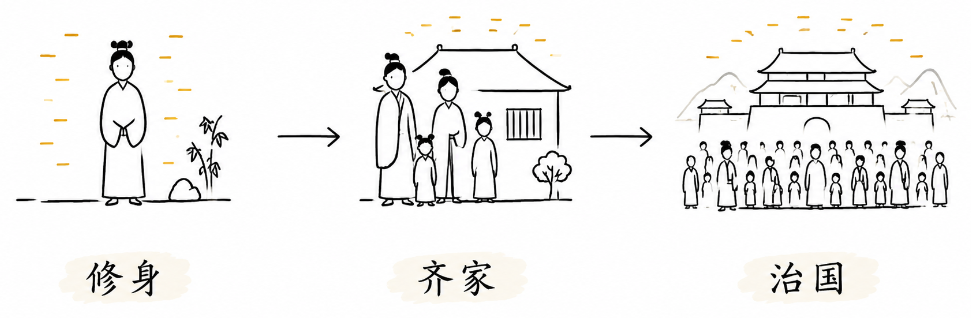
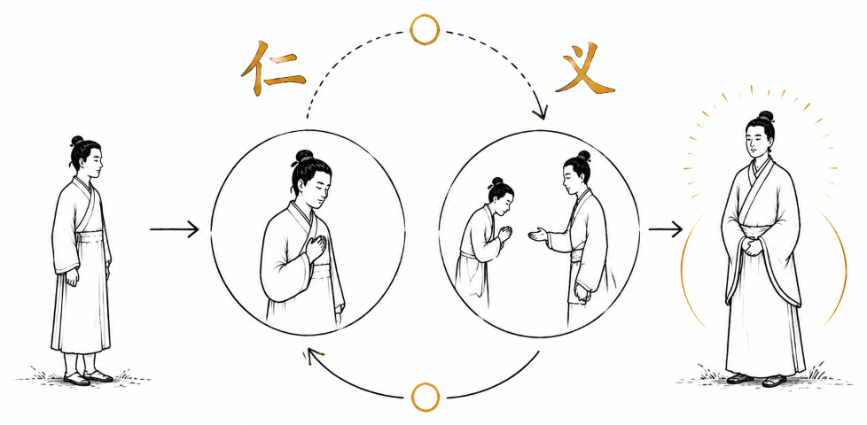
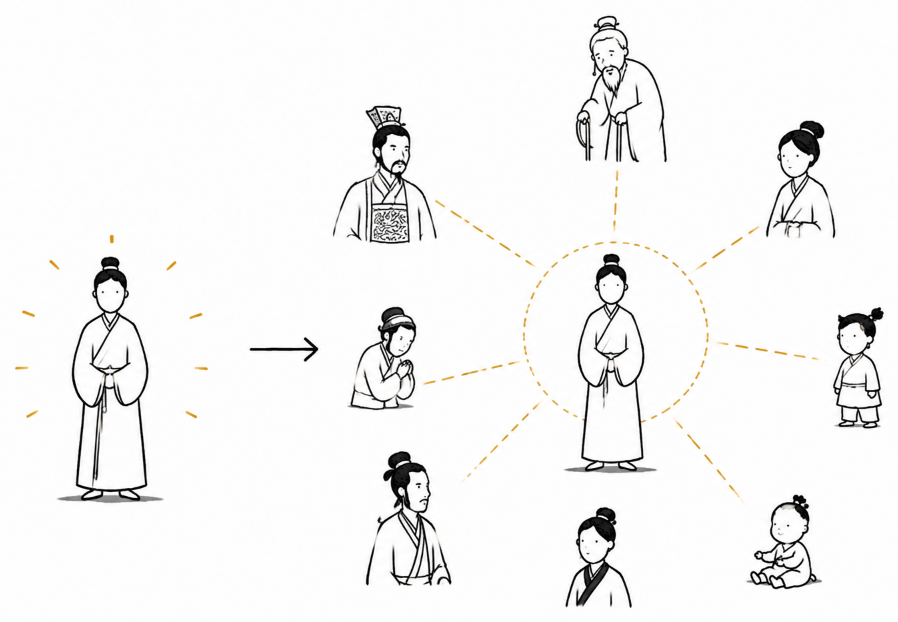
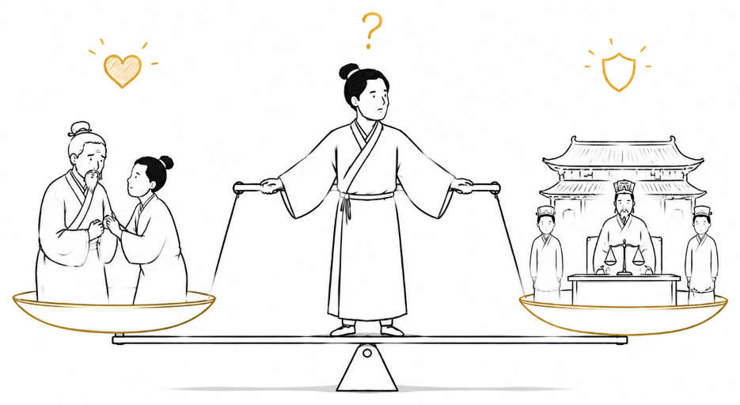
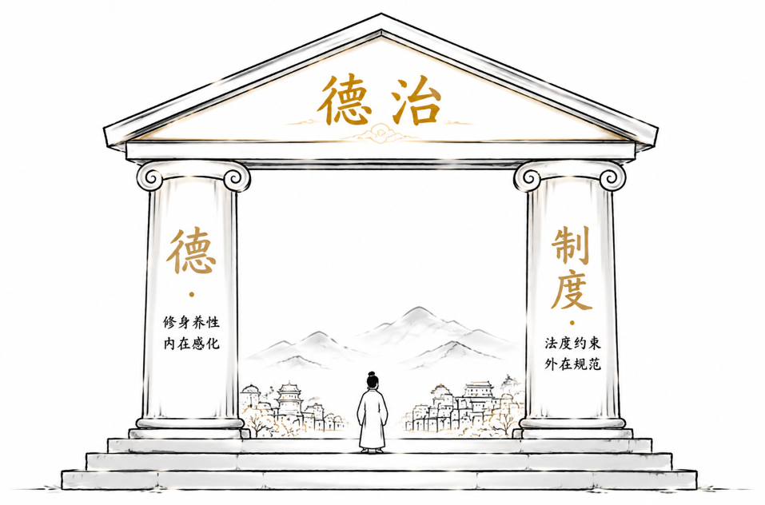

孔子眼里的和谐社会，是如何形成的？
“自天子以至于庶人，壹是皆以修身为本。”
孔子认为，和谐的社会秩序始于个人的修养（修身），进而推及家庭与人际关系（齐家），最终落地为国家的治理（治国）。

然而，个人、家庭与国家利益之间很难做到完美权衡，我们总是会遇到这样或那样的深刻道德困境，并且需要努力做出权衡。
第一层：修身 — 个人修养的起点
在孔子之前，“君子”仅仅指贵族血统的拥有者。孔子做了一件划时代的事：他剥离了“君子”的阶级标签，将其重塑为一种在日常实践中不断修炼所达成的理想品格。
修身的核心，是处理好“仁”与“礼”这两个不可分割的维度：
- 仁（内在的道德准绳）：是对他人真挚的关切、体恤与爱护（“樊迟问仁，子曰：爱人”）。它为所有道德行为提供了内在的温情与情感根基。
- 礼（外在规范与表达）：是将内心的“仁”转化为公共社交中得体言行、举止与仪式的实践形式。它决定了善意该如何通过恰当的语言、时机与分寸呈现出来，让善意得以可重复、可感知地表达。
更重要的是，“仁”与“礼”之间构成了一个双向塑造的动态循环：
- 仁引导礼（由内向外）：内心的真诚关切决定了外在规范的灵魂。如果只有“礼”的形式而缺乏“仁”的同理心，礼仪就会沦为虚伪的表演、冰冷的教条甚至对人的操弄。
- 礼塑造仁（由外向内）：得体的外在实践反过来锤炼与强化内心的善意。如果只有“仁”的善意而缺乏“礼”的分寸与形式，好心往往会因为表达笨拙而造成误解，甚至无法落地。

《论语·颜渊》中所说的“克己复礼为仁”，正是这种双向循环的体现：它并非要压抑主体性去盲从外在规矩，而是通过得体的规范实践，让克制私心、体恤他人的反应逐渐内化为一种本能习惯。所谓的“君子”，正是通过这种仁与礼的双向塑造，将内心的善意与外在的分寸融为一体的人。
真正的修身既不是孤立的自我感动，也不是机械的外在从众，而是在“仁”与“礼”的相互塑造中建立内心的定力。
第二层：齐家 — 人伦相处的法则
当修身养性的个体走进群居生活，他就置身于由血缘、相处与身份交织成的关系网络之中（父子、君臣、夫妻、朋友）。在孔子的视角里，社会并非原子化个人的简单相加，而是由这些具体的人伦关系构成的。

为了理顺这些复杂的社会关系，孔子给出了三套核心的伦理法则：
- 忠（尽己之心的责任）：在各自的社会角色中倾尽全力、恪尽职守，对自己承担的伦理身份负责。
- 恕（换位思考的底线与天花板）：“己所不欲，勿施于人。”它是为人处世最低也是最高的道德底线——说它“最低”，因为它提出了不将痛苦强加于人的防守门槛；说它“最高”，因为要彻底打破自我中心去同理感知他人，需要极高的人格修养，正如孔子所言，这是值得用一生去践行的至高境界。
- 正名（名实对齐的契约）：“君君、臣臣、父父、子子。”当名分与现实的责任脱节时，尊称就变成了虚伪的口号。如果一个父亲不尽关爱与抚养之责，却只在压制孩子时大喊“我是你老子”，或者一个国君荒淫暴虐却单向要求臣子尽忠，称谓的道德号召力就彻底崩溃了。孔子强调“正名”，正是要求占有什么名头，就必须承担起对应的现实责任，社会关系的契约才不会脱轨。
然而，当不同的道德责任发生直接碰撞时，最引人深思的困境也随之浮现。
在《论语·子路》中，叶公向孔子夸耀：“我们村里有个正直的人，他父亲偷了羊，他亲自去举报了父亲。”孔子却给出了截然相反的回答：“我们村的正直人不一样：父为子隐，子为父隐，直在其中矣。”
这就撞上了社会秩序中最经典的伦理困境：当家庭中的亲情伦理（孝）与公共社会的通用法治（公义）发生剧烈冲突时，人究竟该如何抉择？

在叶公看来，“正直”是超越亲情的抽象公义与法律面前人人平等；但在孔子看来，如果一个人连至亲的父子信任都能随时背叛，那么整个社会的道德基石也就荡然无存了。因此，孔子认为合理的做法并非冷酷地去充当国家的告密者，而是优先守护亲情与信任的底线（“父为子隐，子为父隐”），再通过真诚的规劝与共同承担代价来补救。在孔子眼里，一个健全的社会法则应当尊重最基本的人伦底线，而不是为了抽象的公义去强行撕裂人性最真实的信任。
第三层：治国 — 治理的辐射与现实的壁垒
当修身与齐家的逻辑延伸到公共政治层级，就形成了孔子的政治理想——德治（为政以德）。
面对国家的治理，孔子敏锐地看到了纯粹依赖刑罚与强制的致命缺陷：
“道之以政，齐之以刑，民免而无耻；道之以德，齐之以礼，有耻且格。”（《论语·为政》）
在孔子看来，用严刑峻法治理，民众只会想方设法钻空子、逃避惩罚，内心却毫无对规矩的敬畏与耻辱感；而用道德示范与得体的规范（礼）去感化，民众不仅会产生内在的羞耻心，还会发自内心地归顺与遵守。统治者的修养与品格，就像是吹过大地的大风：“君子之德风，小人之德草。草上之风，必偃。”
然而，这种由内而外的治理理想，在现实面前也遇到了最深刻的现代追问。
靠道德示范治理国家，高度依赖于统治者个人高尚的修养。但人性是复杂的，道德本身无法自我审计——如果权力的持有者缺乏自律，仅靠道德劝诫（“谏”）根本无法阻止暴政。缺乏硬性的制度约束与权力制衡，过分强调德治，反而可能给滥用权力者提供庇护。
反过来看，即便拥有完美的制度，制度终究也是由人在执行。因此，制度的刚性约束与个人道德的内生感化，并非相互排斥，而是构建健康社会秩序不可或缺的两面。

结语
我们今天重新审视孔子，并非要复古，而是要重新体会他在面对人性的复杂、伦理的冲突与社会的混乱时，那种试图从内心深处重建秩序的深刻努力。